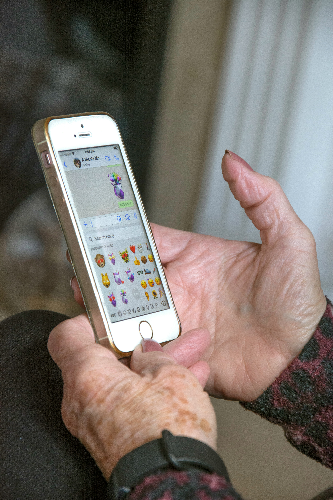
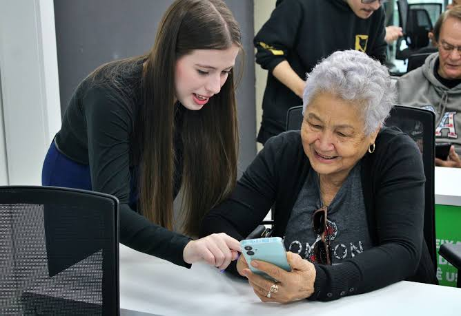

Sobre o Projeto
O Conexão Paciente foi criado para dar suporte e assistência a adultos e idosos que encontram dificuldades no ambiente digital. Nosso foco é ensinar e realizar tarefas virtuais do cotidiano de maneira simplificada, humana e acolhedora.
Como surgiu a ideia
Esse projeto nasceu a partir da minha experiência real de trabalho em uma loja de iluminação. Além de atender os clientes, eu realizava impressões de documentos, criação de arquivos e ajudava os idosos a puxarem suas contas digitais para pagar no celular.
Ver que tarefas tão simples traziam tanta dor de cabeça e dependência para essas pessoas me deu o empurrão necessário para estruturar essa iniciativa.

Nosso compromisso
Para garantir um aprendizado tranquilo, seguimos regras fundamentais nos nossos atendimentos:
- Explicar as ferramentas passo a passo, sem pressa nenhuma.
- Não utilizar palavras complicadas ou termos técnicos da informática.
- Garantir total paciência e respeito ao ritmo de cada pessoa.

Por que a inclusão importa?
Trazer acessibilidade ao mundo virtual é dar liberdade para que todos resolvam suas pendências sem depender de terceiros. Assista abaixo a um vídeo explicativo sobre essa transformação: